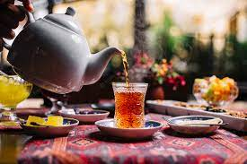
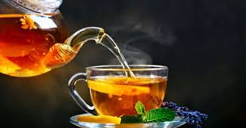

Assuming a generation of 12 years, Chinese small-leaf tea is estimated to have diverged from Assam tea around 22,000 years ago, while Chinese Assam tea and Indian Assam tea diverged 2,800 years ago. The divergence of Chinese small-leaf tea and Assam tea would correspond to the last glacial maximum.[17][18] Early tea drinking A 19th-century Japanese painting depicting Shennong: Chinese legends credit Shennong with thetea.[19] People in ancient East Asia ate tea for centuries, perhaps even millennia, before ever consuming it as a beverage. They would nibble on the leaves raw, add them to soups or greens, or ferment them and chew like betel.[20][page needed][21] Tea drinking may have begun in the region of Yunnan, where it was used for medicinal purposes. It is also believed that in Sichuan, "people began to boil tea leaves for consumption into a concentrated liquid without the addition of other leaves or herbs, thereby using tea as a bitter yet stimulating drink, huan presented tu to the Zhou king. The Qin later conquered the state of Ba and its neighbour Shu, and
The earliest known physical evidence[25] of tea was discovered in 2016 in the mausoleum of Emperor Jing of Han in Xi'an, indicating that tea from the genus Camellia was drunk by Han dynasty emperors as early as the second century BC.[26] The Han dynasty work, "The Contract for a Youth", written by Wang Bao in 59 BC, [27] contains the first known reference to boiling tea. Among the tasks listed to be undertaken by the youth, the contract states that "he shall boil tea and fill the utensils" and "he shall buy tea at Wuyang".[2] The f irst record of tea cultivation is also dated to this period, during which tea was cultivated on Meng Mountain Through the centuries, a variety of techniques for processing tea, and a number of different forms of tea, were developed. During the Tang dynasty, tea was steamed, then pounded and shaped into cake form,[33] while in the Song dynasty, loose-leaf tea was developed and became popular. During the Yuan and Ming dynasties, unoxidized tea leaves were first stirred in a hot dry pan, then rolled and air-dried, a process that stops the oxidation process that would have turned the leaves dark, thereby allowing tea to remain green. In the 15th century, oolong tea, in which the leaves are allowed to partially oxidize before being heated in the pan, was developed.[30] Western tastes, however, favoured the fully oxidized black tea, and the leaves were allowed to oxidize further. Yellow tea was an accidental discovery in the production of green tea during the Ming dynasty, when apparently careless practices allowed the leaves to turn yellow, which yielded a different flavour.[34] Worldwide spread
Tea-weighing station north of Batumi, Russian Empire before 1915 Tea was first introduced to Western priests and merchants in China during the 16th century, at which time it was termed chá.[13] The earliest European reference to tea, written as chiai, came from Delle navigationi e viaggi written by Venetian Giambattista Ramusio in 1545.[35] The first recorded shipment of tea by a European nation was in 1607 when the Dutch East India Company moved a cargo of tea from Macao to Java, then two years later, the Dutch bought the first assignment of tea which was from Hirado in Japan to be shipped to Europe. [36] Tea became a fashionable drink in The Hague in the Netherlands, and the Dutch introduced the drink to Germany, France, and across the Atlantic to New Amsterdam (New York).[37] In 1567, Russian people came in contact with tea when the Cossack Atamans Petrov and Yalyshev visited China [38] The Mongolian Khan donated to Tsar Michael I four poods (65–70 kg) of tea in 1638.[39] According to Jeremiah Curtin,[40] it was possibly in 1636[41] that Vassili Starkov was sent as envoy to the Altyn Khan. He was given 250 pounds of tea as a gift to the tsar. Starkov at first refused, seeing no use for a load of dead leaves, but the Khan insisted. Thus was tea introduced to Russia. In 1679, Russia concluded a treaty on reg ular tea supplies from China via camel caravan in exchange for furs. It is today considered the de facto nati onal beverage.

The Raymond, Hugh Mckay Commander. The first vessel direct from China to Hull on her arrival on 14 October 1843 with a cargo of tea. The first record of tea in English came from a letter written by Richard Wickham who ran an East India Company office in Japan, writing to a merchant in Macao requesting "the best sort of c haw" in 1615. Peter Mundy, a traveller and merchant who came across tea in Fujian in 1637, wrote, only water with a kind of herb boyled in it".[42][43] Tea was sold in a coffee house in London in 1657, Pepys tasted tea in 1660, and Catherine of Braganza took the tea-drinking habit to the English court married Charles II in 1662. Tea, however, was not widely consumed in the British Isles until the 18th centuryremai ned expensive until the latter part of that period. English drinkers preferred to add sugar and mil black tea, and black tea overtook green tea in popularity in the 1720s.[44] Tea smuggling during the 18th century led to the general public being able to afford and consume tea. The British government removed the tax on t ea, thereby eliminating the smuggling trade, by 1785.[45] In Britain and Ireland, tea was initially consumed as a luxury item on special occasions, such as religious festivals, wakes, and domestic work gatherings. Th e price of tea in Europe fell steadily during the 19th century, especially after Indian tea began to ar i n large quantities; by the late 19th century tea had become an everyday beverage for all levels of society ] The popularity of tea played a role in historical events – the Tea Act of 1773 provoked the Boston rty t hat escalated into the American Revolution. The need to address the issue of British trade deficit because e trade in tea resulted in the Opium Wars. The Qing Kangxi Emperor had banned foreign products from being China, decreeing in 1685 that all goods bought from China must be paid for in silver coin or bullion.[47] rs from other nations then sought to find another product, in this case opium, to sell to China to earn the silver they were required to pay for tea and other commodities. The subsequent attempts by the Chinese Government to curtail the trade in opium led to war.[48]
Chinese small-leaf-type tea was introduced into India in 1836 by the British in an attempt to break the Chinese monopoly on tea.[49] In 1841, Archibald Campbell brought seeds of Chinese tea from the Kumaun region 0and experimented with planting tea in Darjeeling. The Alubari tea garden was opened in 1856, and Darjeeli ng tea began to be produced.[50] In 1848, Robert Fortune was sent by the Honourable East India Company on a mission to China to bring the tea plant back to Great Britain. He began his journey in high secrecy as his mission occurred in the lull between the First Opium War and the Second Opium War.[51] The Chinese tea plants he brought back were introduced to the Himalayas, though most did not survive. The British had discovered that a different variety of tea was endemic to Assam and the northeast region of India, which was then hybridized with Chinese small-leaf-type tea. Using Chinese planting and cultivation techniques, the British colonial government established a tea industry by offering land in Assam to any European who agreed to cultivate it for export.[49] Tea was originally consumed only by Anglo-Indians; however, it became widely popular in India in the 1950s because of a successful advertising campaign by the India Tea Board.[49] The British introduced tea industry to Sri Lanka (then Ceylon) in 1867.[52] Chemical compositio See also: Phenolic content in tea Physically speaking, tea has properties of both a solution and a suspension. It is a solution of all the ater-soluble compounds that have been extracted from the tea leaves, such as the polyphenols and amino acids, but is a suspension when all of the insoluble components are considered, such as the cellulose in the tea leaves.[citation needed] Tea infusions are among most consumed beverages globally.[53] Caffeine constitutes about 3% of tea's dry weight, translating to between 30 and 90 milligrams per 250-millilitre (8+1⁄2 US fl oz) cup depending on the type, brand,[54] and brewing method.[55 ] A study found that the caffeine content of one gram of black tea ranged from 22 to 28 mg, while the caffei ne content of one gram of green tea ranged from 11 to 20 mg, reflecting a significant difference. [56] Tea also contains small amounts of theobromine and theophylline, which are stimulants, and xanthines si milar to caffeine.[57] Fresh tea leaves in various stages of growth The astringency in tea can be attributed to the presence of polyphenols. These are the most abundant comp unds in tea leaves, making up 30–40% of their composition.[58] Polyphenols include flavonoids , epigallocatechin gallate (EGCG), and other catechins.[59][60] Although there has been preliminary clin ical research on whether green or black teas may protect against various human diseases, there is no ev idence that tea polyphenols have any effect on health or lowering disease risk.[61][62]
e history of Camellia sinensis's consumption, there is no high-quality evidence showing that tea gi ves significant benefits other than possibly increasing alertness, an effect caused by caffeine in the te a leaves.[63][64] In clinical research conducted in the early 21st century, it was found there is no scientif ic evidence to indicate that consuming tea affects any disease or improves health.[63] Black and green teas contain no essential nutrients in significant amounts, with the exception of the dietary mineral manganese, at 0.5 mg per cup or 26% of the Reference Daily Intake (RDI).[65] Fluoride is sometimpres ent in tea; certain types of "brick tea", made from old leaves and stems, have the highest levels, enough to pose a health risk if much tea is drunk, which has been attributed to high levels of fluoride in soils, acidic soils, and long brewing.[66] Cultivation and harvesting Tea plantation workers in Sri Lanka Camellia sinensis is an evergreen plant that grows mainly in tropical and subtropical climates.[67] Some varieties can also tolerate marine climates and are cultivated as far north as Cornwall in England,[68] Perthshire in Scotland,[69] Washington in the United States,[70] and Vancouver Island in Canada.[ 71] In the Southern Hemisphere, tea is grown as far south as Hobart in Tasmania[72][73] and Waikato in New Z ealand.[74] Tea plants are propagated from seed and cuttings; about 4 to 12 years are needed for a plant to b ear seed and about three years before a new plant is ready for harvesting.[67] In addition to a zone mate o r warmer, tea plants require at least 127 cm (50 in) of rainfall per year and prefer acidic soils.[75]high -quality tea plants are cultivated at elevations of up to 1,500 m (4,900 ft) above sea level. Though at these heights the plants grow more slowly, they acquire a better flavour.[76]